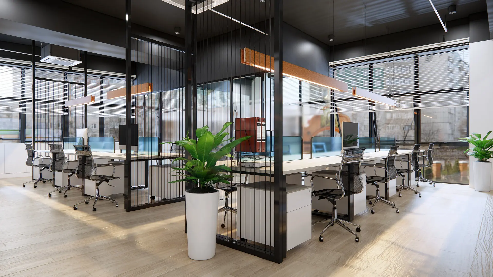
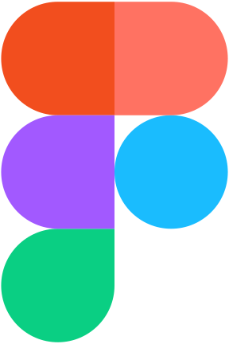

貴社のWebサイトに
目を引くアニメーションを !!
HOSPITDESIGN
魅力的なWebアニメーションで
ユーザーを引きつける
ユーザーを引きつける
HOSPITDESIGNは、GSAPとScrollTriggerを活用して、インタラクティブなWebアニメーションを制作いたします。
GSAPとScrollTriggerの強み
1.滑らかなアニメーション
高性能なアニメーションで、ユーザー体験を向上させます。これにより、訪問者がサイトに長く滞在し、コンテンツに対する関心を高めます。
2.柔軟なトリガー
スクロールに応じたアニメーションを簡単に実装し、動的なコンテンツを提供します。これにより、ユーザーが自然な流れで情報を取得でき、サイト全体のナビゲーションがスムーズになります。
3.高い互換性
主要なブラウザやデバイスでの動作を保証し、幅広いユーザーに対応します。これにより、どのデバイスからアクセスしても一貫した体験を提供できます。
Lenisライブラリを使用して、スムーズで自然な慣性スクロールを実現することもできます。
貴社のWebサイトを次のレベルへと引き上げましょう。お問い合わせをお待ちしております。

HOSPITDESIGNが出来ること
CSS設計
スキル
1 of 4
BEMを用いて他の方が見ても理解しやすく、保守・拡張しやすい設計をしております。
JavaScript
スキル
2 of 4

GSAP + ScrollTriggerやJQueryで
サイト内に動きをつけることが出来ます。
サイト内に動きをつけることが出来ます。
WordPress
スキル
3 of 4
オリジナルデザインのコーディングとWordPress化まで対応できます。
Figma
スキル
4 of 4

Webデザイン（デザインカンプ）を
制作しております。
制作しております。
Qualification
平成28年11月：ITパスポート 取得
平成20年2月：Webクリエイター能力認定試験 上級 取得
平成14年10月：日本経営協会DTP検定Ⅰ種 取得
Illustrator + Photoshop アドビ認定トレーナー 取得